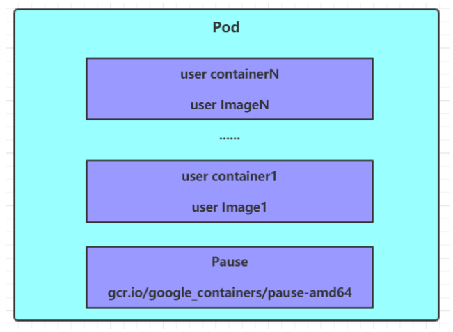

7.Pod
Kubernetes-Pod
Pod是 kubernetes 集群进行管理的最小单元，程序要运行必须部署在容器中，而容器必须存在于 Pod 中。
Pod 可以认为是容器的封装，一个 Pod 中可以存在一个或者多个容器。

kubernetes在集群启动之后，集群中的各个组件也都是以Pod方式运行的。
1 | kubectl get pod -n kube-system |
具体操作
创建运行
kubernetes没有提供单独运行Pod的命令，都是通过Pod控制器来实现的
1 | # 命令格式： kubectl run (pod控制器名称) [参数] |
查看信息
1 | # 查看Pod基本信息 |
访问 Pod（通过 IP）
1 | # 获取podIP |
删除 Pod
1 | # 删除指定Pod |
配置
创建一个 yaml 文件 1
2
3
4
5
6
7
8
9
10
11
12
13apiVersion: v1
kind: Pod
metadata:
name: nginx
namespace: dev
spec:
containers:
- image: nginx:1.17.1
name: pod
ports:
- name: nginx-port
containerPort: 80
protocol: TCP
然后就可以执行对应的创建和删除命令了，这样创建的就是 Pod，而不是 Pod
控制器 1
2
3
4# 创建
kubectl create -f pod-nginx.yaml
# 删除
kubectl delete -f pod-nginx.yaml